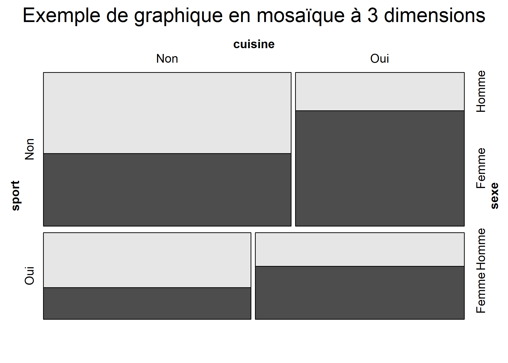
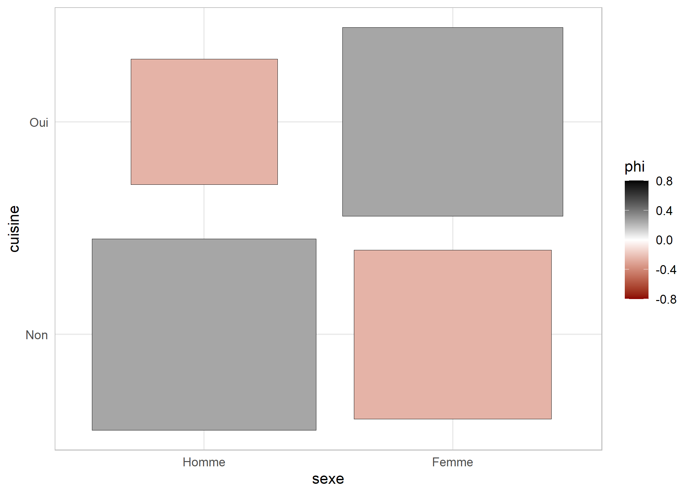
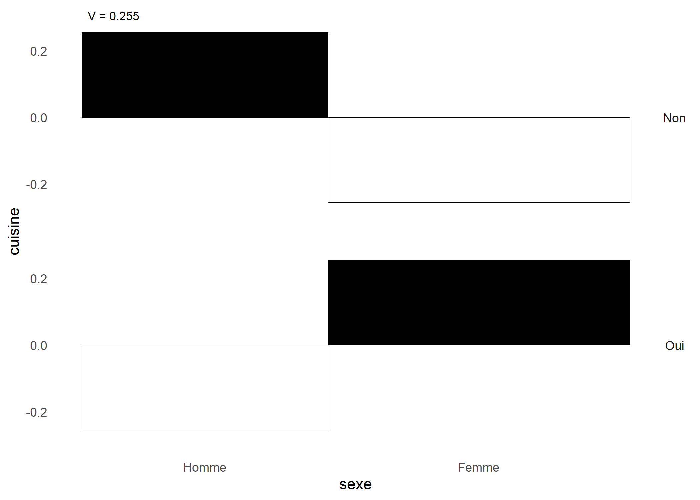
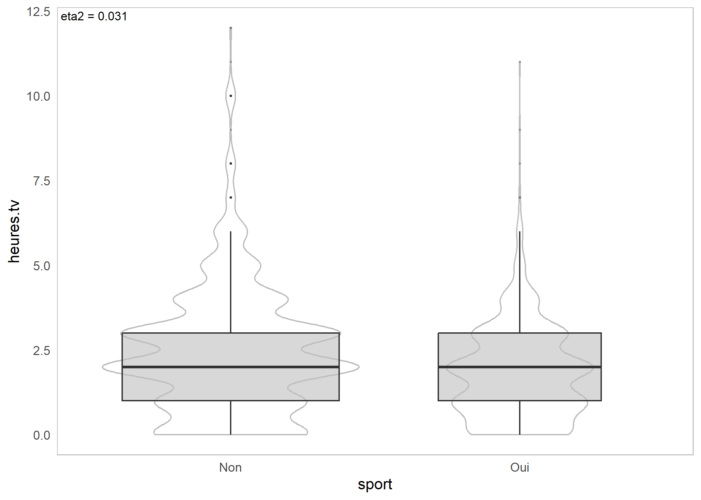
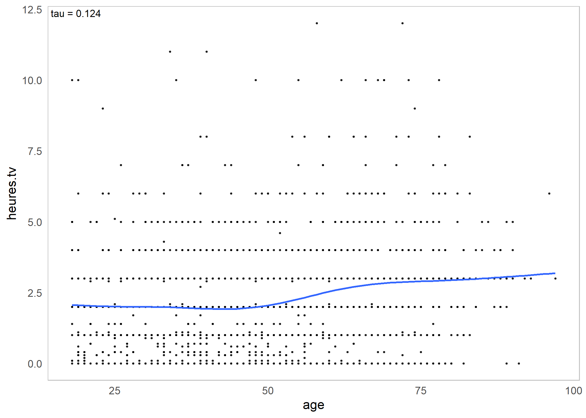

Statistique bivariée
Une version actualisée de ce chapitre est disponible sur guide-R : Statistique bivariée & Tests de comparaison
Ce chapitre est évoqué dans le webin-R #03 (statistiques descriptives avec gtsummary et esquisse) sur YouTube.
On entend par statistique bivariée l’étude des relations entre deux variables, celles-ci pouvant être quantitatives ou qualitatives. La statistique bivariée fait partie de la statistique descriptive.
La statistique univariée a quant à elle déjà été abordée dans un chapitre dédié.
Comme dans la partie précédente, on travaillera sur les jeux de données fournis avec l’extension questionr et tiré de l’enquête Histoire de vie et du recensement 1999 :
library(questionr)
data(hdv2003)
d <- hdv2003load(url("https://github.com/larmarange/analyse-R/raw/gh-pages/data/rp99.RData"))Deux variables quantitatives
La comparaison de deux variables quantitatives se fait en premier lieu graphiquement, en représentant l’ensemble des couples de valeurs. On peut ainsi représenter les valeurs du nombre d’heures passées devant la télévision selon l’âge.
plot(d$age, d$heures.tv)
Le fait que des points sont superposés ne facilite pas la lecture du graphique. On peut utiliser une représentation avec des points semi-transparents.
plot(d$age, d$heures.tv, pch = 19, col = rgb(1, 0, 0, 0.1))
Plus sophistiqué, on peut faire une estimation locale de densité et représenter le résultat sous forme de « carte ». Pour cela on commence par isoler les deux variables, supprimer les observations ayant au moins une valeur manquante à l’aide de la fonction complete.cases, estimer la densité locale à l’aide de la fonction kde2d de l’extension MASS1 et représenter le tout à l’aide d’une des fonctions image, contour ou filled.contour…
library(MASS)
tmp <- d[, c("age", "heures.tv")]
tmp <- tmp[complete.cases(tmp), ]
filled.contour(kde2d(tmp$age, tmp$heures.tv), color = terrain.colors)Une représentation alternative de la densité locale peut être obtenue avec la fonction smoothScatter.
smoothScatter(d[, c("age", "heures.tv")])
Dans tous les cas, il n’y a pas de structure très nette qui semble se dégager. On peut tester ceci mathématiquement en calculant le coefficient de corrélation entre les deux variables à l’aide de la fonction cor :
cor(d$age, d$heures.tv, use = "complete.obs")[1] 0.1776L’option use permet d’éliminer les observations pour lesquelles l’une des deux valeurs est manquante. Le coefficient de corrélation est très faible.
On va donc s’intéresser plutôt à deux variables présentes dans le jeu de données rp99, la part de diplômés du supérieur et la proportion de cadres dans les communes du Rhône en 1999.
À nouveau, commençons par représenter les deux variables.
plot(rp99$dipl.sup, rp99$cadres, ylab = "Part des cadres", xlab = "Part des diplomês du supérieur")Ça ressemble déjà beaucoup plus à une relation de type linéaire.
Calculons le coefficient de corrélation :
cor(rp99$dipl.sup, rp99$cadres)[1] 0.8975C’est beaucoup plus proche de 1. On peut alors effectuer une régression linéaire complète en utilisant la fonction lm :
reg <- lm(cadres ~ dipl.sup, data = rp99)
summary(reg)
Call:
lm(formula = cadres ~ dipl.sup, data = rp99)
Residuals:
Min 1Q Median 3Q Max
-9.691 -1.901 -0.182 1.491 17.087
Coefficients:
Estimate Std. Error t value Pr(>|t|)
(Intercept) 1.2409 0.3299 3.76 2e-04 ***
dipl.sup 1.3835 0.0393 35.20 <2e-16 ***
---
Signif. codes:
0 '***' 0.001 '**' 0.01 '*' 0.05 '.' 0.1 ' ' 1
Residual standard error: 3.28 on 299 degrees of freedom
Multiple R-squared: 0.806, Adjusted R-squared: 0.805
F-statistic: 1.24e+03 on 1 and 299 DF, p-value: <2e-16Le résultat montre que les coefficients sont significativement différents de 0. La part de cadres augmente donc avec celle de diplômés du supérieur (ô surprise). On peut très facilement représenter la droite de régression à l’aide de la fonction abline.
plot(rp99$dipl.sup, rp99$cadres, ylab = "Part des cadres", xlab = "Part des diplômés du supérieur")
abline(reg, col = "red")
On remarquera que le premier argument passé à la fonction lm a une syntaxe un peu particulière. Il s’agit d’une formule, utilisée de manière générale dans les modèles statistiques. On indique la variable d’intérêt à gauche et la variable explicative à droite, les deux étant séparées par un tilde ∼ (obtenu sous Windows en appuyant simultanément sur les touches Alt Gr et 2). On remarquera que les noms des colonnes de notre tableau de données ont été écrites sans guillemets.
Dans le cas présent, nous avons calculé une régression linéaire simple entre deux variables, d’où l’écriture cadres ∼ dipl.sup. Si nous avions voulu expliquer une variable z par deux variables x et y, nous aurions écrit z ∼ x + y. Il est possible de spécifier des modèles encore plus complexes.
Pour un aperçu de la syntaxe des formules sous R, voir http://ww2.coastal.edu/kingw/statistics/R-tutorials/formulae.html.
Trois variables ou plus
Lorsque l’on souhaite représenter trois variables quantitatives simultanément, il est possible de réaliser un nuage de points représentant les deux premières variables sur l’axe horizontal et l’axe vertical et en faisant varier la taille des points selon la troisième variable, en utilisant l’argument cex de la fonction plot.
plot(rp99$dipl.aucun, rp99$tx.chom, cex = rp99$pop.tot / 10^4)
Lorsque l’on étudie un plus grand nombres de variables quantitatives, il est peut être utile de réaliser une matrice de nuages de points, qui compare chaque variable deux à deux et qui s’obtient facilement avec la fonction pairs.
pairs(rp99[, c("proprio", "hlm", "locataire", "maison")])
Une variable quantitative et une variable qualitative
Représentations graphiques
Quand on parle de comparaison entre une variable quantitative et une variable qualitative, on veut en général savoir si la distribution des valeurs de la variable quantitative est la même selon les modalités de la variable qualitative. En clair : est ce que l’âge de ceux qui écoutent du hard rock est différent de l’âge de ceux qui n’en écoutent pas ?
Là encore, l’idéal est de commencer par une représentation graphique. Les boîtes à moustaches (boxplot en anglais) sont parfaitement adaptées pour cela.
Si on a construit des sous-populations d’individus écoutant ou non du hard rock, on peut utiliser la fonction boxplot.
d.hard <- subset(d, hard.rock == "Oui")
d.non.hard <- subset(d, hard.rock == "Non")
boxplot(d.hard$age, d.non.hard$age)
Mais construire les sous-populations n’est pas nécessaire. On peut utiliser directement la version de boxplot prenant une formule en argument.
boxplot(age ~ hard.rock, data = d)À première vue, ô surprise, la population écoutant du hard rock a l’air sensiblement plus jeune. Peut-on le tester mathématiquement ?
Les boîtes à moustache peuvent parfois être trompeuses car ne représentant qu’imparfaitement la distribution d’une variable quantitative2.
Les graphique de pirates ou pirateplot sont une visualisation alternative qui combinent :
- un nuage de points représentant les données brutes ;
- une barre verticale représentant la moyenne ;
- un rectangle traduisant une inférence sur cette moyenne ;
- une forme en
haricot
ouviolon
indiquant la distribution.
De tels graphiques peuvent être réalisés avec la fonction pirateplot de l’extension yarr. Par défaut, les rectangles représentent un intervalle bayésien crédible ou Bayesian Highest Density Intervals ou HDI de la moyenne. On peut représenter à la place des intervalles de confiance avec inf.method = "ci".
library(yarrr)
pirateplot(
age ~ hard.rock,
data = d,
theme = 1, inf.method = "ci",
bar.f.o = .1, bar.f.col = "grey10"
)
pirates
Tests statistiques
On peut calculer la moyenne d’âge des deux groupes en utilisant la fonction tapply3 :
tapply(d$age, d$hard.rock, mean) Non Oui
48.30 27.57 Pour un test de comparaison de deux moyennes (test t de Student), on pourra se référer au chapitre dédié aux test statistiques de comparaison.
Deux variables qualitatives
La comparaison de deux variables qualitatives s’appelle en général un tableau croisé. C’est sans doute l’une des analyses les plus fréquentes lors du traitement d’enquêtes en sciences sociales.
Tableau croisé
La manière la plus simple d’obtenir un tableau croisé est d’utiliser la fonction table en lui donnant en paramètres les deux variables à croiser. En l’occurrence nous allons croiser un recodage du niveau de qualification regroupé avec le fait de pratiquer un sport.
On commence par calculer la variable recodée et par afficher le tri à plat des deux variables :
d$qualif2 <- as.character(d$qualif)
d$qualif2[d$qualif %in% c("Ouvrier specialise", "Ouvrier qualifie")] <- "Ouvrier"
d$qualif2[d$qualif %in% c("Profession intermediaire", "Technicien")] <- "Intermediaire"
table(d$qualif2)| Autre | Cadre | Employe | Intermediaire | Ouvrier |
|---|---|---|---|---|
| 58 | 260 | 594 | 246 | 495 |
Le tableau croisé des deux variables s’obtient de la manière suivante :
table(d$sport, d$qualif2)| / | Autre | Cadre | Employe | Intermediaire | Ouvrier |
|---|---|---|---|---|---|
| Non | 38 | 117 | 401 | 127 | 381 |
| Oui | 20 | 143 | 193 | 119 | 114 |
Il est tout à fait possible de croiser trois variables ou plus. Par exemple :
table(d$sport, d$cuisine, d$sexe)| Var1 | Var2 | Var3 | Freq |
|---|---|---|---|
| Non | Non | Femme | 358 |
| Homme | 401 | ||
| Oui | Femme | 389 | |
| Homme | 129 | ||
| Oui | Non | Femme | 132 |
| Homme | 228 | ||
| Oui | Femme | 222 | |
| Homme | 141 | ||
Une alternative à la fonction table est la fonction xtabs. On indiquera à cette dernière le croisement à effectuer à l’aide d’une formule puis l’objet contenant nos données. Comme il ne s’agit pas d’un modèle avec une variable à expliquer, toutes les variables seront indiquées à la droite du symbole ∼ et séparées par +.
xtabs(~sport, d)| Non | Oui |
|---|---|
| 1277 | 723 |
xtabs(~ sport + cuisine, d)| sport/cuisine | Non | Oui |
|---|---|---|
| Non | 759 | 518 |
| Oui | 360 | 363 |
xtabs(~ sport + cuisine + sexe, d)| sport | cuisine | sexe | Freq |
|---|---|---|---|
| Non | Non | Femme | 358 |
| Homme | 401 | ||
| Oui | Femme | 389 | |
| Homme | 129 | ||
| Oui | Non | Femme | 132 |
| Homme | 228 | ||
| Oui | Femme | 222 | |
| Homme | 141 |
On remarquera que le rendu par défaut est en général plus lisible car le nom des variables est indiqué, permettant de savoir quelle variable est affichée en colonnes et laquelle en lignes.
Si l’on utilise des données labellisées, la fonction xtabs ne prendra pas en compte les étiquettes de valeur.
data(fecondite)
xtabs(~ educ + region, femmes)| educ/region | 1 | 2 | 3 | 4 |
|---|---|---|---|---|
| 0 | 387 | 213 | 282 | 256 |
| 1 | 179 | 53 | 86 | 142 |
| 2 | 123 | 57 | 37 | 131 |
| 3 | 18 | 1 | 2 | 33 |
On pourra alors utiliser la fonction ltabs de l’extension question, qui fonctionne exactement comme xtabs, à ceci près qu’elle prendra en compte les étiquettes de variable et de valeur quand elles existent.
ltabs(~ educ + region, femmes)| educ: Niveau d’éducation/region: Région de résidence | [1] Nord | [2] Est | [3] Sud | [4] Ouest |
|---|---|---|---|---|
| [0] aucun | 387 | 213 | 282 | 256 |
| [1] primaire | 179 | 53 | 86 | 142 |
| [2] secondaire | 123 | 57 | 37 | 131 |
| [3] supérieur | 18 | 1 | 2 | 33 |
Pourcentages en ligne et en colonne
On n’a cependant que les effectifs, ce qui rend difficile les comparaisons. L’extension questionr fournit des fonctions permettant de calculer facilement les pourcentages lignes, colonnes et totaux d’un tableau croisé.
Les pourcentages lignes s’obtiennent avec la fonction lprop4. Celle-ci s’applique au tableau croisé généré par table ou xtabs :
tab <- table(d$sport, d$qualif2)
lprop(tab)| / | Autre | Cadre | Employe | Intermediaire | Ouvrier | Total |
|---|---|---|---|---|---|---|
| Non | 3.571 | 11.00 | 37.69 | 11.94 | 35.81 | 100 |
| Oui | 3.396 | 24.28 | 32.77 | 20.20 | 19.35 | 100 |
| Ensemble | 3.509 | 15.73 | 35.93 | 14.88 | 29.95 | 100 |
tab <- xtabs(~ sport + qualif2, d)
lprop(tab)| sport/qualif2 | Autre | Cadre | Employe | Intermediaire | Ouvrier | Total |
|---|---|---|---|---|---|---|
| Non | 3.571 | 11.00 | 37.69 | 11.94 | 35.81 | 100 |
| Oui | 3.396 | 24.28 | 32.77 | 20.20 | 19.35 | 100 |
| Ensemble | 3.509 | 15.73 | 35.93 | 14.88 | 29.95 | 100 |
Les pourcentages ligne ne nous intéressent guère ici. On ne cherche pas à voir quelle est la proportion de cadres parmi ceux qui pratiquent un sport, mais plutôt quelle est la proportion de sportifs chez les cadres. Il nous faut donc des pourcentages colonnes, que l’on obtient avec la fonction cprop :
cprop(tab)| sport/qualif2 | Autre | Cadre | Employe | Intermediaire | Ouvrier | Ensemble |
|---|---|---|---|---|---|---|
| Non | 65.52 | 45 | 67.51 | 51.63 | 76.97 | 64.37 |
| Oui | 34.48 | 55 | 32.49 | 48.37 | 23.03 | 35.63 |
| Total | 100.00 | 100 | 100.00 | 100.00 | 100.00 | 100.00 |
Dans l’ensemble, le pourcentage de personnes ayant pratiqué un sport est de 35,6 %. Mais cette proportion varie fortement d’une catégorie professionnelle à l’autre : 55,0 % chez les cadres contre 23,0 % chez les ouvriers.
Enfin, les pourcentage totaux s’obtiennent avec la fonction prop :
prop(tab)| sport/qualif2 | Autre | Cadre | Employe | Intermediaire | Ouvrier | Total |
|---|---|---|---|---|---|---|
| Non | 2.299 | 7.078 | 24.26 | 7.683 | 23.049 | 64.37 |
| Oui | 1.210 | 8.651 | 11.68 | 7.199 | 6.897 | 35.63 |
| Total | 3.509 | 15.729 | 35.93 | 14.882 | 29.946 | 100.00 |
À noter qu’on peut personnaliser l’affichage de ces tableaux de pourcentages à l’aide de différentes options, dont digits qui règle le nombre de décimales à afficher et percent qui indique si on souhaite ou non rajouter un symbole % dans chaque case du tableau. Cette personnalisation peut se faire directement au moment de la génération du tableau et dans ce cas elle sera utilisée par défaut :
ctab <- cprop(tab, digits = 2, percent = TRUE)
ctab| sport/qualif2 | Autre | Cadre | Employe | Intermediaire | Ouvrier | Ensemble |
|---|---|---|---|---|---|---|
| Non | 65.52 | 45 | 67.51 | 51.63 | 76.97 | 64.37 |
| Oui | 34.48 | 55 | 32.49 | 48.37 | 23.03 | 35.63 |
| Total | 100.00 | 100 | 100.00 | 100.00 | 100.00 | 100.00 |
ou bien ponctuellement en passant les mêmes arguments à la fonction print :
ctab <- cprop(tab)
print(ctab, percent = TRUE) qualif2
sport Autre Cadre Employe Intermediaire Ouvrier
Non 65.5% 45.0% 67.5% 51.6% 77.0%
Oui 34.5% 55.0% 32.5% 48.4% 23.0%
Total 100.0% 100.0% 100.0% 100.0% 100.0%
qualif2
sport Ensemble
Non 64.4%
Oui 35.6%
Total 100.0% Représentation graphique
On peut obtenir une représentation graphique synthétisant l’ensemble des résultats obtenus sous la forme d’un graphique en mosaïque grâce à la fonction mosaicplot.
mosaicplot(qualif2 ~ sport, data = d, shade = TRUE, main = "Graphe en mosaïque")
Comment interpréter ce graphique haut en couleurs5 ? Chaque rectangle représente une case de tableau. Sa largeur correspond aux pourcentages en colonnes (il y a beaucoup d’employés et d’ouvriers et très peu d’« Autre »). Sa hauteur correspond aux pourcentages en lignes : la proportion de sportifs chez les cadres est plus élevée que chez les employés. Enfin, la couleur de la case correspond au résidu du test du χ² correspondant : les cases en rouge sont sous-représentées, les cases en bleu sur-représentées, et les cases blanches sont statistiquement proches de l’hypothèse d’indépendance.
Les graphiques en mosaïque permettent notamment de représenter des tableaux croisés à 3 ou 4 dimensions, voire plus.
L’extension vcd fournie une fonction mosaic fournissant plus d’options pour la création d’un graphique en mosaïque, permettant par exemple d’indiquer quelles variables doivent être affichées horizontalement ou verticalement, ou encore de colorier le contenu des rectangles en fonction d’une variable donnée, …
library(vcd)
Attachement du package : 'vcd'L'objet suivant est masqué depuis 'package:latticeExtra':
rootogramLes objets suivants sont masqués depuis 'package:ggmosaic':
mosaic, spinemosaic(~ sport + cuisine + sexe, d, highlighting = "sexe", main = "Exemple de graphique en mosaïque à 3 dimensions")
Lorsque l’on s’intéresse principalement aux variations d’une variable selon une autre, par exemple ici à la pratique du sport selon le niveau de qualification, il peut être intéressant de présenter les pourcentages en colonne sous la forme de barres cumulées.
barplot(cprop(tab, total = FALSE), main = "Pratique du sport selon le niveau de qualification")
Tests statistiques
Pour un test de comparaison de proportions, un test du Chi² ou encore un test exact de Fisher, on pourra se référer au chapitre dédié aux test statistiques de comparaison.
Tableaux faciles avec gtsummary
La fonction tbl_summary de l’extension gtsummary accepte un argument by permettant de réaliser des croisements selon une variable catégorielle.
library(gtsummary)
theme_gtsummary_language("fr", decimal.mark = ",", big.mark = " ")Setting theme `language: fr`d %>%
tbl_summary(
include = c("hard.rock", "heures.tv", "sport", "qualif2"),
by = "hard.rock"
)| Caractéristique | Non, N = 1 9861 | Oui, N = 141 |
|---|---|---|
| heures.tv | 2,00 (1,00 – 3,00) | 2,00 (2,00 – 3,75) |
| Manquant | 5 | 0 |
| sport | ||
| Non | 1 268 (64%) | 9 (64%) |
| Oui | 718 (36%) | 5 (36%) |
| qualif2 | ||
| Autre | 57 (3,5%) | 1 (9,1%) |
| Cadre | 260 (16%) | 0 (0%) |
| Employe | 587 (36%) | 7 (64%) |
| Intermediaire | 244 (15%) | 2 (18%) |
| Ouvrier | 494 (30%) | 1 (9,1%) |
| Manquant | 344 | 3 |
| 1 Médiane (EI); n (%) | ||
Il est possible d’ajouter une colonne total avec add_overall et des tests statistiques avec add_p.
d %>%
tbl_summary(
include = c("hard.rock", "heures.tv", "sport", "qualif2"),
by = "hard.rock"
) %>%
add_overall(last = TRUE) %>%
add_p()| Caractéristique | Non, N = 1 9861 | Oui, N = 141 | Total, N = 2 0001 | p-valeur2 |
|---|---|---|---|---|
| heures.tv | 2,00 (1,00 – 3,00) | 2,00 (2,00 – 3,75) | 2,00 (1,00 – 3,00) | 0,4 |
| Manquant | 5 | 0 | 5 | |
| sport | >0,9 | |||
| Non | 1 268 (64%) | 9 (64%) | 1 277 (64%) | |
| Oui | 718 (36%) | 5 (36%) | 723 (36%) | |
| qualif2 | 0,088 | |||
| Autre | 57 (3,5%) | 1 (9,1%) | 58 (3,5%) | |
| Cadre | 260 (16%) | 0 (0%) | 260 (16%) | |
| Employe | 587 (36%) | 7 (64%) | 594 (36%) | |
| Intermediaire | 244 (15%) | 2 (18%) | 246 (15%) | |
| Ouvrier | 494 (30%) | 1 (9,1%) | 495 (30%) | |
| Manquant | 344 | 3 | 347 | |
| 1 Médiane (EI); n (%) | ||||
| 2 test de Wilcoxon-Mann-Whitney; test du khi-deux d'indépendance; test exact de Fisher | ||||
Par défaut, les pourcentages affichés sont les pourcentages en colonne. Mais il est possible de les remplacer par les pourcentages en ligne avec l’argument percent.
d %>%
dplyr::select(hard.rock, sport, qualif2) %>%
tbl_summary(
by = "hard.rock",
percent = "row"
) %>%
add_overall(last = TRUE)| Caractéristique | Non, N = 1 9861 | Oui, N = 141 | Total, N = 2 0001 |
|---|---|---|---|
| sport | |||
| Non | 1 268 (99%) | 9 (0,7%) | 1 277 (100%) |
| Oui | 718 (99%) | 5 (0,7%) | 723 (100%) |
| qualif2 | |||
| Autre | 57 (98%) | 1 (1,7%) | 58 (100%) |
| Cadre | 260 (100%) | 0 (0%) | 260 (100%) |
| Employe | 587 (99%) | 7 (1,2%) | 594 (100%) |
| Intermediaire | 244 (99%) | 2 (0,8%) | 246 (100%) |
| Ouvrier | 494 (100%) | 1 (0,2%) | 495 (100%) |
| Manquant | 344 | 3 | 347 |
| 1 n (%) | |||
Citons également la variante tbl_cross utilisable pour un tableau croisé de seulement deux variables (une en ligne et une en colonne).
d %>%
tbl_cross(sport, hard.rock)| hard.rock | Total | ||
|---|---|---|---|
| Non | Oui | ||
| sport | |||
| Non | 1 268 | 9 | 1 277 |
| Oui | 718 | 5 | 723 |
| Total | 1 986 | 14 | 2 000 |
Pour une présentation de toutes les possibilités offertes, voir la vignette dédiée sur http://www.danieldsjoberg.com/gtsummary/articles/tbl_summary.html.
Analyse des associations avec GDAtools
L’extension GDAtools développée par Nicolas Robette propose, entre autres, plusieurs fonctions pour décrire les associations statistiques entre deux variables catégorielles et/ou continues.
Pour une présentation détaillée, on pourra se référer à la vignette (en français) fournie par le package : https://nicolas-robette.github.io/GDAtools/articles/french/Tutoriel_descr.html
Pour deux variables catégorielles, on aura recours à , assoc.twocat, ggassoc_crosstab et ggassoc_phiplot.
library(GDAtools)
Attachement du package : 'GDAtools'L'objet suivant est masqué depuis 'package:cluster':
medoidsassoc.twocat(d$sexe, d$cuisine)$freq
Non Oui Sum
Homme 629 270 899
Femme 490 611 1101
Sum 1119 881 2000
$prop
Non Oui Sum
Homme 31.45 13.50 44.95
Femme 24.50 30.55 55.05
Sum 55.95 44.05 100.00
$rprop
Non Oui Sum
Homme 69.97 30.03 100
Femme 44.50 55.50 100
Sum 55.95 44.05 100
$cprop
Non Oui Sum
Homme 56.21 30.65 44.95
Femme 43.79 69.35 55.05
Sum 100.00 100.00 100.00
$expected
Non Oui
Homme 503 396
Femme 616 485
$chi.squared
[1] 130.2
$cramer.v
[1] 0.2551
$permutation.pvalue
NULL
$pearson.residuals
Non Oui
Homme 5.619 -6.332
Femme -5.077 5.722
$phi
Non Oui
Homme 0.2551 -0.2551
Femme -0.2551 0.2551
$phi.perm.pval
NULL
$gather
Var1 Var2 Freq prop rprop cprop expected
1 Homme Non 629 0.3145 0.6997 0.5621 503
2 Femme Non 490 0.2450 0.4450 0.4379 616
3 Homme Oui 270 0.1350 0.3003 0.3065 396
4 Femme Oui 611 0.3055 0.5550 0.6935 485
std.residuals phi
1 5.619 0.2551
2 -5.077 -0.2551
3 -6.332 -0.2551
4 5.722 0.2551library(ggplot2)
ggassoc_crosstab(d, aes(x = sexe, y = cuisine))
ggassoc_phiplot(d, aes(x = sexe, y = cuisine))
Pour une variable catégorielle croisée avec une variable continue, on aura recours à , assoc.catcont et ggassoc_boxplot.
assoc.catcont(d$sport, d$heures.tv)$eta.squared
[1] 0.03109
$permutation.pvalue
NULL
$cor
Non Oui
0.176 -0.176
$cor.perm.pval
NULLggassoc_boxplot(d, aes(x = sport, y = heures.tv))Warning: Removed 5 rows containing non-finite values
(`stat_ydensity()`).Warning: Removed 5 rows containing non-finite values
(`stat_boxplot()`).
Pour deux variables continues, on aura recours à , assoc.twocont et ggassoc_scatter.
assoc.twocont(d$age, d$heures.tv)| pearson | spearman | kendall | |
|---|---|---|---|
| value | 0.1776 | 0.1727 | 0.1241 |
ggassoc_scatter(d, aes(x = age, y = heures.tv))`geom_smooth()` using formula = 'y ~ s(x, bs = "cs")'Warning: Removed 5 rows containing non-finite values
(`stat_smooth()`).Warning: Removed 5 rows containing missing values
(`geom_point()`).
MASSest installée par défaut avec la version de base de R.↩︎Voir par exemple The boxplot and its pitfalls sur https://www.data-to-viz.com.↩︎
La fonction
tapplyest présentée plus en détails dans le chapitre Manipulation de données.↩︎Il s’agit en fait d’un alias pour les francophones de la fonction
rprop.↩︎Sauf s’il est imprimé en noir et blanc…↩︎